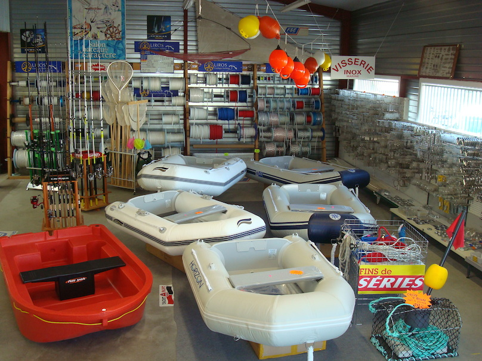

Annexes
Abri-Nautique vous propose un large choix de pneumatiques : des annexes rigides, semi-rigide ou souples pour toutes vos balades en mer et en Rance.
Idéal pour un mouillage aux abords de Dinard ou de la côte du pays malouin.
Nous vous proposons aussi tous les accessoires pneumatiques pour naviguer dans les meilleures conditions : gonfleurs électriques, à piston ou à pied, nettoyants pneumatiques, échelles, taquets d'amarrage ou taquets de ponts poignée, etc...
